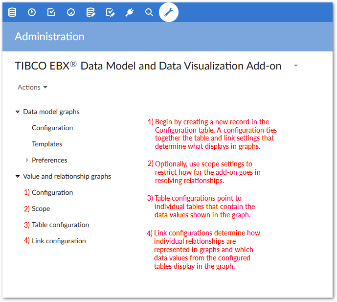
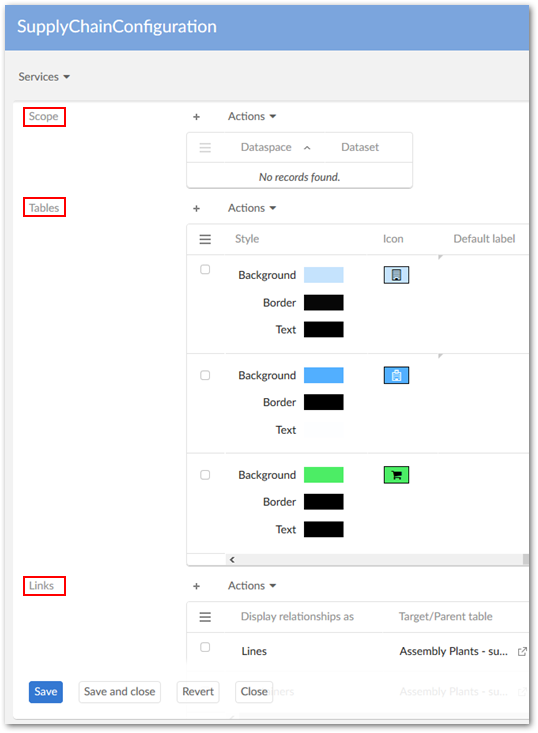
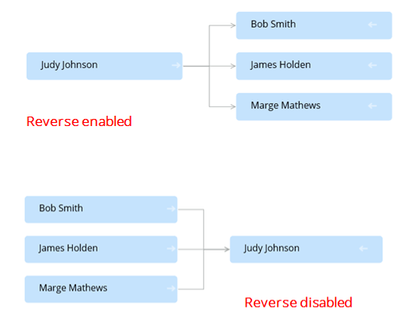

The following image outlines the path to configuring a data value graph. The Options overview section describes configuration options and settings in more detail.
You perform all of the following configuration actions in the Administration > User interface > TIBCO EBX® Data Model and Data Visualization Add-on > Value and relationship graphs group:
You can create a graph configuration by adding an entry in the Configuration table. Each graph configuration is used to couple all other settings that determine what data displays in a graph and how the data and relationships are rendered.
You might find it helpful to use the main configuration page when changing or updating graph settings. Since each configuration provides easy access to all configuration settings pertaining to a particular data value graph, you wouldn't have to hunt through configured tables, or links to find the desired setting.
When creating a graph configuration, you use the Orientation setting to determine how the graph displays line relationships. You can specify Left-to-right, Right-to-left, Bottom-up, or Top-down. The add-on begins with the root node and renders remaining nodes in the specified direction. Users can change display orientation when opened, but this does not effect the configuration setting. Each time the graph is opened, it uses the configured settings.
After filling in required fields, you can save (but not close the configuration) to use it as a quick access point for remaining configuration options (shown below). When you create scopes, table and link configurations directly from this page, they are automatically associated to the main graph configuration.
Optionally, create a scope. The Scope table allows you to restrict the dataspaces and datasets used in graph generation.
Use the Table configuration table to include tables in this configuration. Users that can view data contained in these tables can then generate graphs once you define the relationships. When adding a table, use the Allow generation from selected table property to specify whether the option to generate a graph displays in the table's Actions menu.
You have several options for defining how labels display in the generated graphs (see Customizing labels for more detailed information on labels):
The Default label property allows you to enter text to display on a node. Alternatively, you can select the wizard icon to choose from related data model elements.
The Localized Label group allows you to select a data model component from which the component's localized label from the DMA will be used. You can also enter the text to display.
The Programmatic Label field field allows you to enter the path to a Java class that defines labels.
You can use a combination of default and localized labels. However, the order of priority is Programmatic, Localized, and Default. So, if you use a programmatic label, it overrides all other settings.
Use the settings in the Node style tab to make it easier for users to differentiate between sources when viewing graphs. You can also use the API to create custom nodes. See Customizing styles for more information on these settings.
Define the relationships between data and how these relationships display using the Link table. Create as many links as required and save and close when finished. Each link is defined by:
Specifying the link relationship type; one graph can display multiple types. See Overview for examples of how each relationship type displays in the graph.
Setting the Source/Target when displaying relationships as lines and Parent/Child for containers. You can also specify whether the first level of parent and target nodes automatically display.
Entering the foreign key path and direction. The Path points to the foreign key and the direction property determines the direction of relationship lines. This field allows you to add multiple paths to account for foreign key references to multiple tables. See Filtering data values for information on using the filter.
Note that the add-on automatically sets the direction value when the foreign key references another table. When Reverse direction is enabled, the graphs generated using self-referencing foreign keys render the relationships in reverse (shown below).
